JPDEM Sub-Reach Delineations
An Interactive Demonstration
JPDEM provides a set of functions that allow you to determine a collection of outlets for sub-delineations of an overall watershed's area.
Once identified, the collection of outlets can be specified as the initialReachOutlets of a VELMA simulation configuration, for MULTI_MODE simulation runs via either JVelma, or VelmaParllelCmdLine.
This document demonstrates the JPDEM functions available for interactively determining a collection of outlets.
Generate flow accumulation ("facc") data
- In JPDEM, load an already-flat-processed Grid .asc DEM map (or, load an unprocessed DEM, and flat-process it.
Here's our example DEM loaded into JDPEM:
(The default display shows elevation values in red-scale: black cells have the lowest elevation, brightest red cells have the highest.)

- Generate flow accumulation data for the DEM.
JPDEM's reach mapping functions assume flow accumulation is available, and will behave abnormally if it is not.
Select the JPDEMTools-->Determine Flow Datamenu item, and JPDEM will generate flow accumulation data for each cell in the DEM. After generating facc data for our example DEM, JPDEM shifts the display to show facc cell values in grey-scale. Cells with higher flow accumulation values are darker.
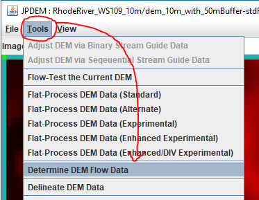
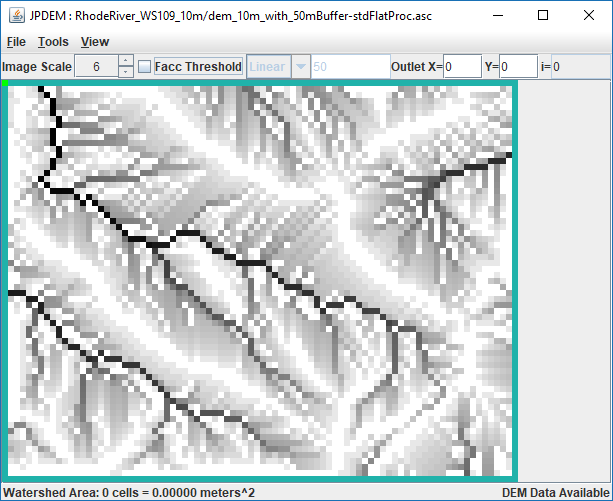
- Show the High-facc Cells
To better distinguish cells with higher facc values, toggle the
Facc Thresholdcheckbox and (for our example DEM) set the type, value pair toLinearand "50".
All cells in the DEM that have facc values equal or greater than the specified threshold will be colored red.
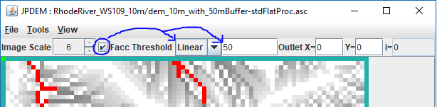
Set the Primary Outlet
The Primary Outlet designates the outlet for the entire watershed. All (sub-)outlets specified via JPDEM's reach mapping functions are assumed to be relative to the Primary Outlet's cell location.
There two ways to set the primary outlet:
- Directly enter the x and y (column and row) coordinates into the
Outletfields on the main display. - Mouse-click the cell location within the display, hold the mouse button down and drag the cursor to highlight the
Set As Primary Outletitem, and finally, release the mouse button.
In the mouse-click example screen-captured below, note that the cell we're selecting (circled in black) has a flow-accumulation ("facc") value of 1778. This means that the full watershed delineated from this primary outlet contains 1778 cells.
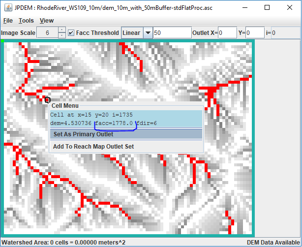
Add Sub-Outlets to JPDEM's Outlets Set
JPDEM maintains a set of cell locations call the 'Outlets Set'. The Outlets Set is a proper set: no cell location can appear in it more than once.
There are three ways to add cell locations to the Outlets Set.
- Mouse-click the cell location, hold and drag the cursor to highlight the
Add to Reach Map Outlets Setitem. - Directly enter one or more cell locations via the
Tools-->Add Multiple Outlets to Outlets Setmenu item. - Automatically identify and add outlets via the
Tools-->Auto-Add Multiple Outlets to Outlets Setmenu item.
We'll start by adding some outlets using the mouse. Because we set the facc threshold to 50, we can easily identify cells with facc values of 50 or more. From setting the primary outlet via the mouse, we also know that the primary outlet has a fac value of 1778. Our basic strategy is to mouse-click on darker cells adjacent to facc-threshold cells and find values close to 50. We'll also consider facc-threshold cells themselves, if they're sufficiently far from the primary outlet. Here's a screen-capture showing the first cell we add to the Outlets Set:
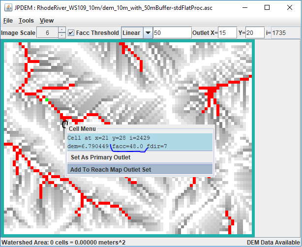
We continue on this for more cells, trying to select locations that are close to 50 or look like forks in the facc-threshold "channels". As we add cells to the Outlets Set, JPDEM colors them green (a slightly lighter shade of green than the primary outlet).
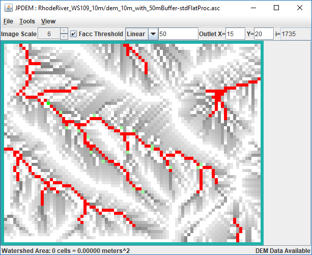
Create a Reach Map
Once we think we have enough sub-outlets added to the Outlets Set, we can create a Reach Map.
Creating a reach map is the way JPDEM figures out which cells in the full watershed belong to each of the sub-outlets in the Outlet Set. Clicking the Tools --> Create Create Reach Map Data from Outlets Set menu item generates reach map data using the current Outlet Set.
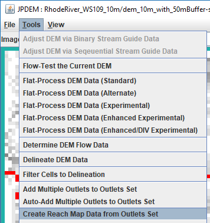
However, when we click Create Create Reach Map Data from Outlets Set we get the following options dialog:
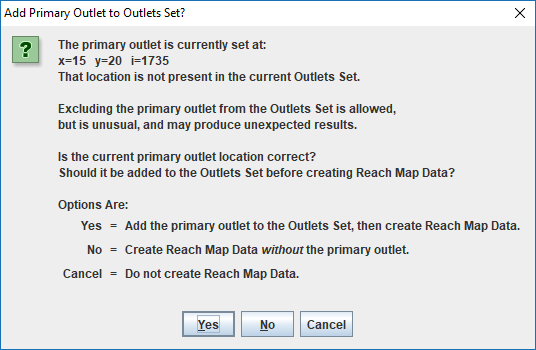
Although we've set the primary outlet at the correct location for our overall watershed, we haven't explicitly added it to the Outlets Set. JPDEM is offering to add it for us, let us proceed without it, or stop creating a Reach Map. For, now let's click "No", and let the process move forward without including the primary outlet.
JPDEM generates the Reach Map data, and displays a report of the results in a pop-up dialog window.
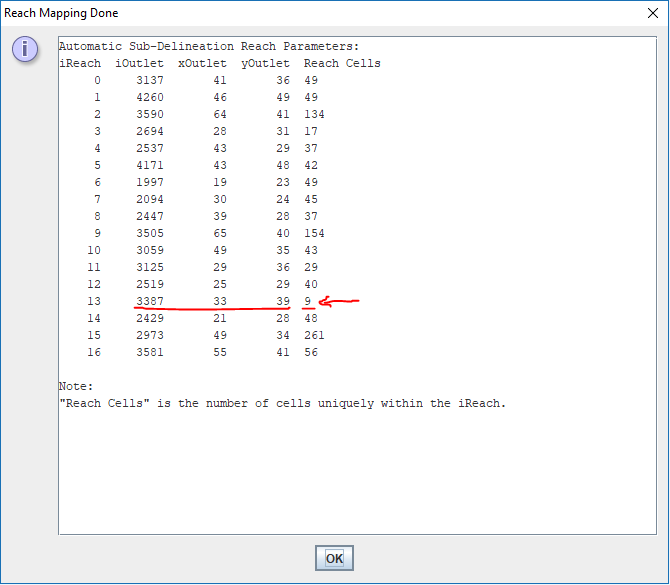
In the reach map result screen-captured above, note the red-underlined sub-reach at iOutlet=3387, with only 9 cells.
We decide that a 9-cell sub-reach isn't worth keeping, and that we don't need this outlet in the Outlet Set.
Fortunately, we can remove it using the mouse-click menu. When you mouse-click a cell that is a member of the Outlets Set, the mouse-click menu contains a Remove Frome Reach Map Outlets Set item:
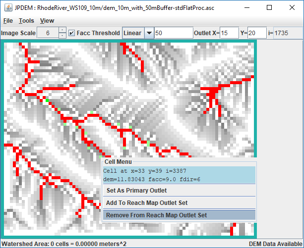
After removing the under-cell'ed outlet from the Outlets Set, we click Tools --> Create Create Reach Map Data from Outlets Set again. This time we get a warning that we will lose our previous reach map results (but not our Outlets Set).
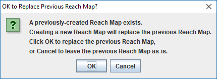
Since we do want a new reach map, we lick OK and continue, again clicking "No" for the "Add Primary Outlet" option.
The new report shows that the remaining sub-outlets all have a "enough" cells for our purposes, so we move on to see what the Reach Map looks like.
View the Reach Map
When Reach Map data is available, JPDEM has a (limited) way of displaying the sub-reaches spatially.
Continuing on with the Outlets Set and Reach Map we created above, we click the Tools --> View Outlets, Reach State --> View Reach Map menu item:

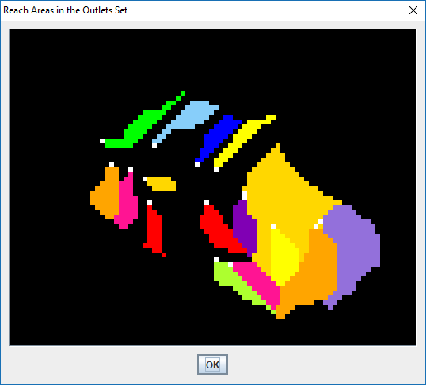
The reach map is displayed at the same scale that JPDEM is set to when the View Reach Map item is clicked.
Cells outside of the the watershed are colored black -- and, hang on, the above map doesn't look quite right, does it?
In fact, it isn't right -- but it is accurate.
What's wrong is that we neglected to include the primary outlet in our Outlet Set.
We can verify this is the case by mouse-clicking on the outlet cell: the mouse-click menu does not include the Remove Frome Reach Map Outlets Set item.
This means that the cell is not a member of the Outlets Set.
We can add it by clicking the Add to Reach Map Outlets Set mouse-click menu item, or we can use the Tools --> Add Multiple Outlets to Outlets Set,
or we can simply run the Create Create Reach Map Data from Outlets Set item once again, and this time, click "Yes" for the "Add Primary Outlet" option.
After doing so, the resulting report confirms that the primary outlet is now part of the Outlets Set, and the Reach Map viewer no longer looks "wrong":
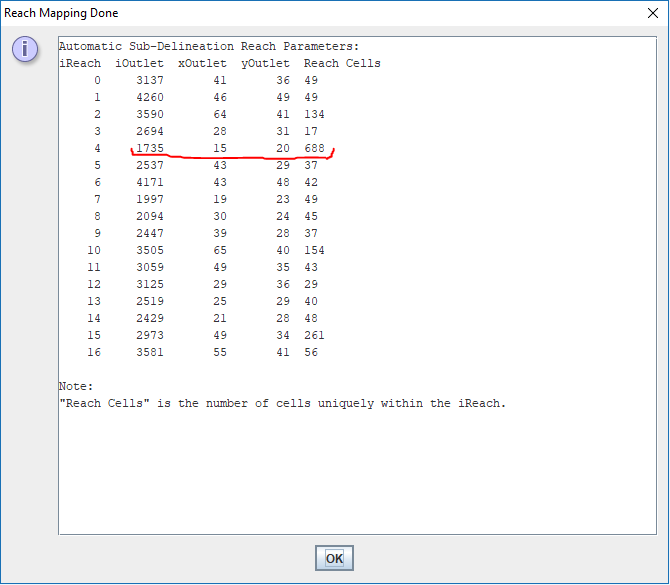
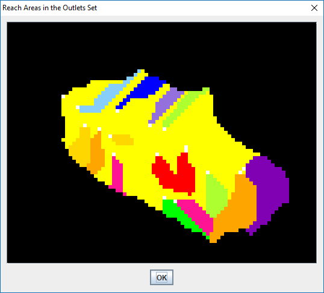
Use the Outlets Set in a VELMA Simulation Configuration
Once we're satisfied that the outlets in the Outlets Set form a satisfactory collection of watershed sub-reaches, we'd like to use that set of outlets in an appropriate VELMA simulation configuration.
By "appropriate", we mean that the VELMA simulation configuration should already be configured to use the same primary outlet location that we've been using in JPDEM.
Neither JPDEM nor VELMA provides any automatic way to enforce this requirement.
Assuming we have an appropriate VELMA simulation configuration .xml file available, JDPEM's File --> Save Outlets Set As --> Modified VELMA XML menu item provides a way to transfer JPDEM's current Outlets Set to that .xml file.
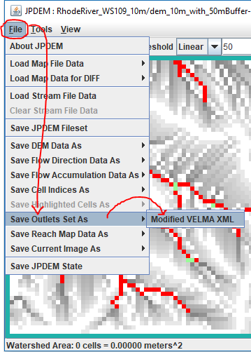
The Modified VELMA XML item first asks for a VELMA .xml file to use as an initial source configuration:
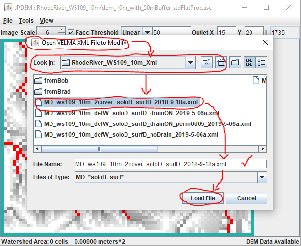
Use the "Look In:" drop-down control and the associated navigation buttons to locate the directory of the appropriate VELMA .xml file.
Click-select the VELMA .xml file itself in the files menu, and verify it in the "File Name:" text box.
Finally, click the "Load File" button to confirm this is the file to use.
Once we've specified the appropriate VELMA .xml file, JPDEM performs the following actions:
- Opens the .xml file and reads the contents.
- Finds the
enableReachMappingparameter and sets its value toMULTI_MODE - Finds the
initialReachOutletsparameter and sets its value to the current Outlets Set. - Opens a
Save Modified ...dialog box to enable saving the changes just made.
The Save Modified ... dialog box looks like this:
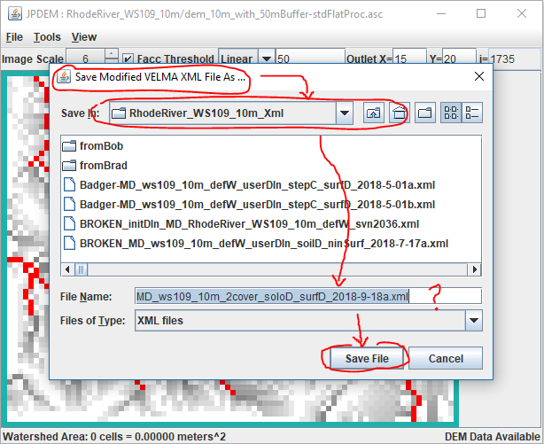
Use the "Save In:" drop-down control and the associated navigation buttons to locate the directory to save the modified (or new) VELMA .xml file. The "File Name:" text box is initially set to the name of the VELMA source .xml file, if we want to overwrite that file's contents with our modified contents, then we can click the Save File button and be done.
However, we can also change the File Name:, to either overrite a different existing file (not recommended) or create a new file.
Assuming we opt to create a new file, we can compare the original source file's enableReachMapping and initialReachOutlets parameters with the modified file's and confirm that JPDEM modified their values:
VELMA original .xml:
/calibration/VelmaInputs.properties/enableReachMapping, SOLO_MODE
/calibration/VelmaInputs.properties/initialReachOutlets,
VELMA modified .xml:
/calibration/VelmaInputs.properties/enableReachMapping, MULTI_MODE
/calibration/VelmaInputs.properties/initialReachOutlets, 2433 3236 2181 3590 1735 4171 4172 1997 2094 2256 3408 2865 3505 2706 2866 3059 2260 3060 2620
There is an alternate to transfer an Outlets Set from JPDEM to an appropriate VELMA .xml file.
It is arguably more straightforward, but it also involves more more steps.
Open the JPDEM Tools --> View Outlets Report and highlight-copy the "simple list" of outlets at the bottom of the report to the system clipboard by using pressing the Ctrl+v key combination.
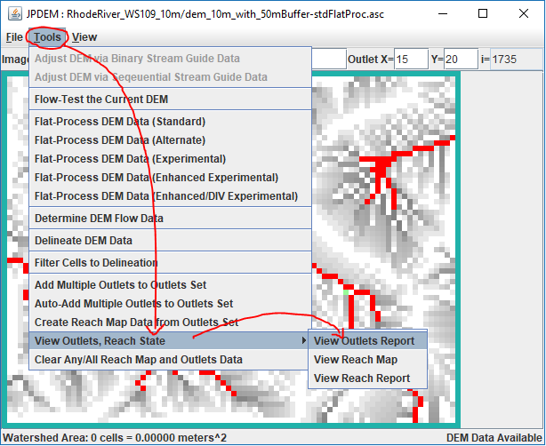
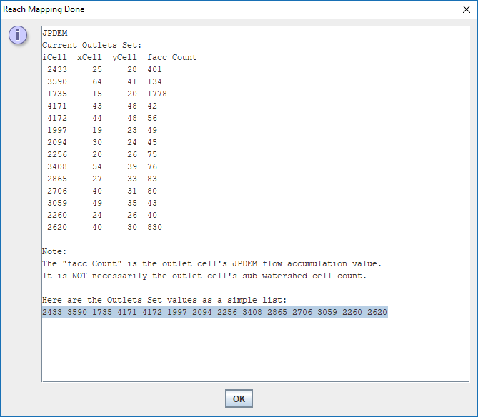
Open JVelma, and load the appropriate simulation configuration .xml file, and edit the "Sub-Reach Mapping Controls" in the Run Parameters tab:
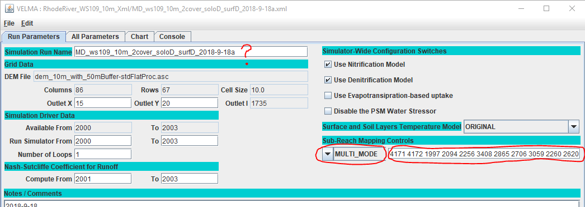
Use the drop-down selector to set the configuration to MULTI_MODE and paste the list of outlets copied from the JDPEM outlets report dialog into the adjacent text box by clicking on the text box and pressing the Ctrl+p key combination.
If we plan to create a new simulation cofiguration .xml file from this modified original, we should also change the Simulation Run Name parameter (see the red question mark in the above image).
Finally, use JVelma's File --> Save Configuration to VELMA XML File menu item to save the MULTI_MODE, outlets-specified configuration.